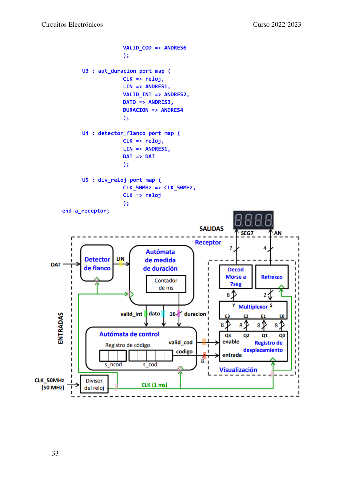

CELT · 2022–2023 · Práctica de electrónica
Receptor analógico-digital y decodificador Morse
Práctica en equipo que combina acondicionamiento analógico de una señal de audio Morse con un bloque digital en VHDL capaz de medir duraciones, distinguir puntos/rayas, formar caracteres y visualizarlos en displays de siete segmentos.
No se limita a una simulación aislada: conecta electrónica analógica, medidas de laboratorio y lógica digital hasta formar una cadena completa de recepción y visualización.
Cadena de señal
Del audio al carácter.
Acondicionamiento
Filtro paso alto, filtro paso banda, amplificación, rectificación y filtrado paso bajo.
Detección
Detector de flanco y medida de duración de intervalos sobre un reloj de 1 ms.
Decodificación
Autómata de control que clasifica punto/raya y empaqueta el código Morse.
Visualización
Decodificador Morse-a-7-segmentos, multiplexación y registro de desplazamiento.
Diseño digital
Módulos VHDL conectados en un receptor completo.
Evidencia
Arquitectura del receptor.

Stack
Tecnologías empleadas
Entregables seleccionados